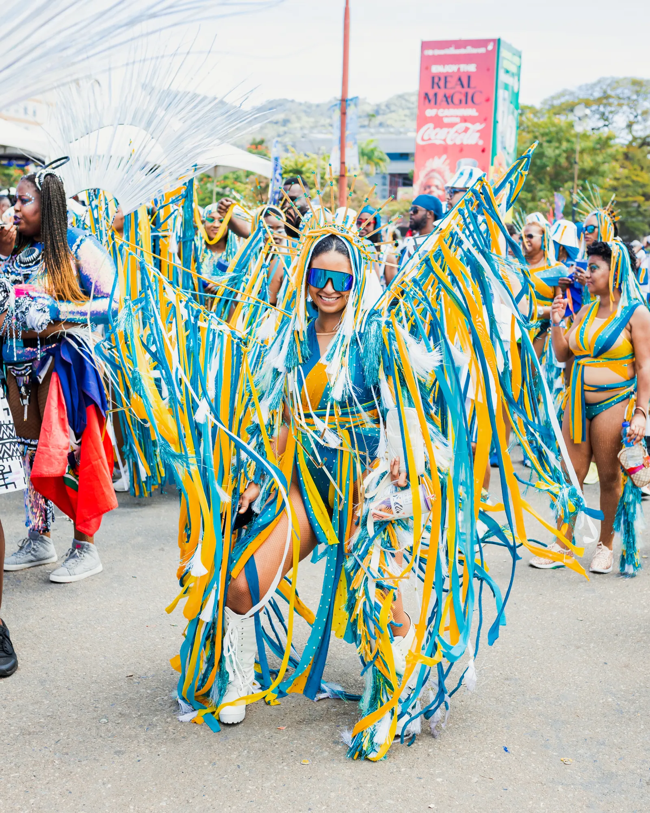

The Story Behind the Lost Tribe, Trinidad and Tobago Carnival’s Most Fashionable Band
Masqueraders wearing carnival costumes with wings and crowns jumped up behind sound trucks—large mobile stages outfitted with speakers, DJ equipment, and steel pans—that crawled through Port of Spain on Tuesday morning. At Victoria Square, members of the Lost Tribe carnival band fastened on backpacks made of drapery, gigantic clusters of butterflies, and capes. Sweet soca and calypso boomed throughout the capital city. “If you hear any noise in the background, they’re music trucks on the Avenue. Welcome to carnival,” says Valmiki Maharaj, the creative director and bandleader of the Lost Tribe. Maharaj says he’s everything from “head cook” to “bottle washer”— he’s a designer, editor, strategist, and visionary. Trinidad and Tobago’s carnival is the largest in the Caribbean. A humble tradition blossomed into a magnetic ritual that draws the diaspora home, and costuming is at the root of the spectacle. “We’re a strange mix of costuming, performance, entertainment, party, all in the same thing,” says Maharaj, who is 37 and from Barataria, a borough 20 minutes east of Port of Spain. The Lost Tribe is a young carnival troupe that put on its first road march seven years ago. Since the beginning, the costumes departed from the feather and headdress bikini mas (costume) most bacchanalists have seen or worn.
On carnival Tuesday, the Lost Tribe pushed the boundaries of tradition yet again. The overarching theme was “202We,” represented by blue, the color of “renewal, of washing, of rebirth,” according to Maharaj. A section called Wish, designed by Naas Mohammed, led the band. The revelers wore painter’s-tape blue iridescent “road gowns” paired with beaded, baby blue bikini bottoms and tropical-print head wraps. The Wish frontline wore four-foot-tall green bamboo-like poles that jutted into the air and were draped with coordinating printed fabric; they looked like sarongs blowing in the wind. The men wore a black netted jacket with blue sequin fringe with mesh joggers. The Lost Tribe costumes are distinctly theatrical yet flattering. They require more fabric than the standard bikini costume, so striking a balance between cool and camp is a must. Maharaj says the departure was intentional. “We jump around for two days in the sun, it’s very hot, we’re in the middle of the planet,” he said. “I understand the reasoning for a two-piece or a one-piece, or basically something that could allow you to be able to not die of heat and collapse on the road. However, I do think that it’s a very narrow book or narrow column to write in.” The Washing, designed by Peter Elias and Jeneile McCarthy, looks like something Wakandan royalty might wear to a mas. Revelers in this section twirled in their azure and teal tie-dyed capes. They wore crowns shaped like elegant masses of seaweed and paraded around Queen’s Park Savannah while a song called “Come Home,” by Nailah Blackman and Skinny Fabulous, reverberated through the streets. The yield this year was the most fashionable costumes on the road in Trinidad and Tobago Carnival, and the Lost Tribe won the title of large band of the year by the National Carnival Commission, besting all of the troupes on the road. “You know the saying ‘a bird is a bird; a fish is a fish,’ like, I couldn’t do that,” Maharaj says. “I felt like there was something artistic that needed to be said. And that’s why I really wanted to give my designers the opportunity to be very abstract.”